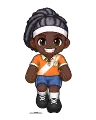

Wiki › Items › Gear › Turf Cleats

Turf Cleats
Gear · Boots Level 16 Common
- Type
- Gear · Boots
- Level
- 16
- Rarity
- Common
- Stats
- ⚔ Attack 7
👟 Speed +5 - Shop price
- 🪙 2,400
- Shop pays
- 🪙 560
Where it comes from
Dropped by (1)
| Opponent | Level | AmountQty | Chance | Where |
|---|---|---|---|---|
 Futsal Pivot | 23 | 1 | 0.50% | City |
Where to buy
- Dona Neide — Neide's Sports Shop 🪙 2,400
Quest reward
- Court Control (Level 20)